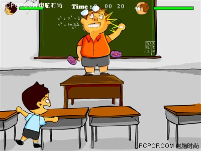

有些老师就该打！
2006/3/25 12:25:56

不管对谁，暴力当然是不好的，但学生对老师的暴力并不能因为是学生对老师的就有了特别应该谴责的理由。除了法律的理由，其他任何的理由都是可笑无聊的。而历史上老师对学生的暴力就从来不是一个特别被关注的问题，这种暴力一直在延续。站在公平的立场上，学生也可以说，你们打了我们几千年，我们反击一下有什么大不了的？
如果站在所谓师道尊严的角度为学生不能打老师辩护，那这种理由在现在就更没有理由了。请问，现在还有什么师道值得被尊严吗？现在的所谓老师越来越向奸商靠拢，教育都成了产业了，既然是产业，学生就是消费者，而消费者就是上帝，上帝打谁都是打了白打。
相信没有谁故意要对谁进行暴力的，被暴力总有被暴力的理由。而学生对老师的暴力理由往往就在老师对学生的暴力理由之中。请问，现在的老师还有多少真把学生当学生了，当学生看着老师大把大把收家长的钞票，谁都有把他们暴打一顿的心。
至于文革时候学生对老师的暴力，就更没有什么值得说的。当时被暴力的多着了，要谴责的多着了，根本不存在什么值得去特别的。而当暴力成为联系学生和老师之间的重要纽带时，我们只能说，维系这个教育系统的体系出大问题了，换个新的还是继续维持，那就看着办吧。